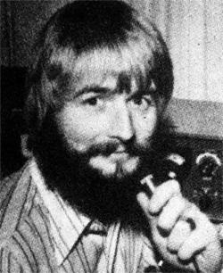
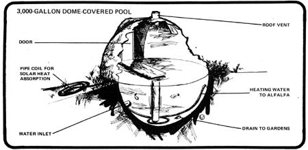

However we define health, we all agree that life without it is a bummer. Staying well involves two sorts of activities:
[1] those which help to prevent malfunction of the body in the first place and
[2] those that help the system begin to function properly again after a breakdown has occurred.
While rural folks may avoid many physical problems because of the good food they eat and the healthful exercise they get, they've always been at a real disadvantage when illness or accident does strike. Many small communities have no doctor, let alone hospital and residents of really isolated locations face severe transportation problems in reaching medical assistance. Here, it seems, is one more area of our lives where those pioneer principles of self sufficiency and mutual aid need to be applied.
Our present health care system has been called "physician centered". Until recently, "going to the doctor" was the only way to get competent help for a physical problem you couldn't handle yourself. Since there aren't enough physicians to go around, however especially in rural areas-not everyone who needs treatment receives it.
While the matter of training more M.D.'s is debated endlessly, with little action, help has been arriving from other directions. The terms nurse practitioner and physician's assistant-which are unfamiliar to most of us-identify two new and growing sources of aid in health care.
Dave Raskin is a MOTHER reader, a ham (W5TYL), and a family nurse practitioner in the small mountain village of Penasco, near Taos and the old Hog Farm in north-central New Mexico. In a recent letter Dave ex
plained: "Nurse practitioners are registered nurses with anywhere from two to five years of basic educational preparation and usually several years of work experience. They then get extra training in medicine to the tune of about one year. Some go on to specialize, but most remain in primary care. In other words, the practitioner is the first source of medical services a patient sees when he seeks help. The N.P-.kind of like the old family doc-then either gives the care needed or refers the person to a specialist. The system employs protocols or algorithms as an outline to be followed in making a diagnosis and providing treatment or referral services.
"Nurse practitioners work closely with M.D.'s and are keenly aware of their own limitations. Even so, N.P.'s are able to provide excellent care to most people who seek their aid.
"Many practitioners work in physicians' offices or hospitals, and others-like myself-have their own clinics. Our facility is open five days a week with an internist present two afternoons. The rest of the time I see patients with the help of a nurse's aid, a clerical staff of two, and occasional nursing and medical students."
The role of the physician's assistant is much like that of the nurse practitioner. P.A.'s, however, tend to have more diverse backgrounds. While some are experienced in nursing, others are former military medics, lab or X-ray technicians, chemists, etc. The P.A. training programs are also more varied, ranging in duration from six months to three years.
As Dave Raskin put it, "The main message is that the next time you allow yourself to be sucked into the 'health care' system, the person who walks up to you with a stethoscope, asks how you feel, takes a history, does an examination, and prescribes therapy may not be an M.D. But fear not, you're in good hands and if you don't believe it, do some homework.
"For any readers who are really interested in the new health professionals I highly recommend two research studies done by McMaster University in Ontario (Department of Medicine, McMaster University, 1200 Main Street, West Hamilton, Ontario). These investigations showed objectively that nurse practitioners were accepted willingly by patients and that the people in their care received excellent treatment.
"I'd like to talk to other health radio freaks about the new health professionals and all other issues related to this field. I'll be glad to correspond or maintain radio skeds with anyone who's interested." (Dave Raskin's address is Box 1751, Taos, New-Mexico 87571.)
Can communication tools like ham radio help in this process of taking care of our bodies and getting them back into shape when we fall ill? Some of us think so. During recent weeks physician-ham Frank Fisher (WA4UXQ/4) and I have been corresponding and talking at length on the air about possibilities in this area. We're still very much in the idea stage and would like to get other interested people involved in these rap sessions. To stimulate your imagination, let me mention three situations in which electronic communication techniques are currently being used. (We'd like to hear about others.)
[1] Deer Isle has a population of 2,500 and is located just off the Maine coast. Several years ago the local residents built a medical center but weren't able to locate a full-time doctor who was willing to move to such an isolated spot. Enter, at that point, nurse practitioner Elaine McCarty. During the past two years Elaine has been working ten to twelve hours a day, making house calls and otherwise helping Deer Islanders stay healthy and get well. Among her tools at the medical center is a closed-circuit-TV/ microwave link to a hospital on the mainland 35 miles away. She uses the system daily for conferences with doctors at that facility, and occasion ally to allow a physician to view an injured patient and provide a second opinion on whether the person should be hospitalized. As much as Elaine McCarty likes the backup support made possible by electronic communication, her primary personal need is continuing education and she wishes the TV system would allow her to meet with medical review teams and "attend" professional meetings around the state.
[2] If you live anywhere in Indiana you can call (800) 382-5681 toll free and listen to your choice of prepared tapes on hypertension, flu, or any one of 209 other subjects related to health. The recordings were prepared by the Indiana State Medical Association and the service is financed by Eli Lilly, the pharmaceutical manufacturer. I understand that there is a similar program in the Seattle area.
[3] Some years ago a group of physician-hams formed their own organization: the Medical Amateur Radio Council, or MARCO. The council's members have rendered aid in many health emergencies-particularly in third world countries-in the form of on-the-air medical consultation and the supplying of drugs and equipment.
Once again, if you're into creating some new approaches to health care for folks in rural and isolated areas, we'd like to rap with you. Peace, Cop Macdonald (WOORX) P.O. Box 483 Rochester, Minnesota 55901.
|
 |
 |
|